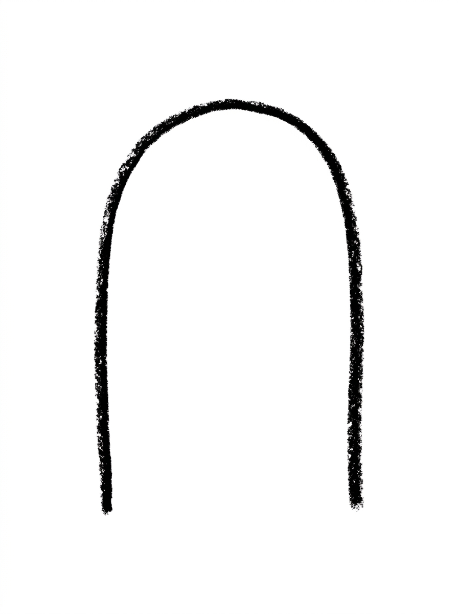
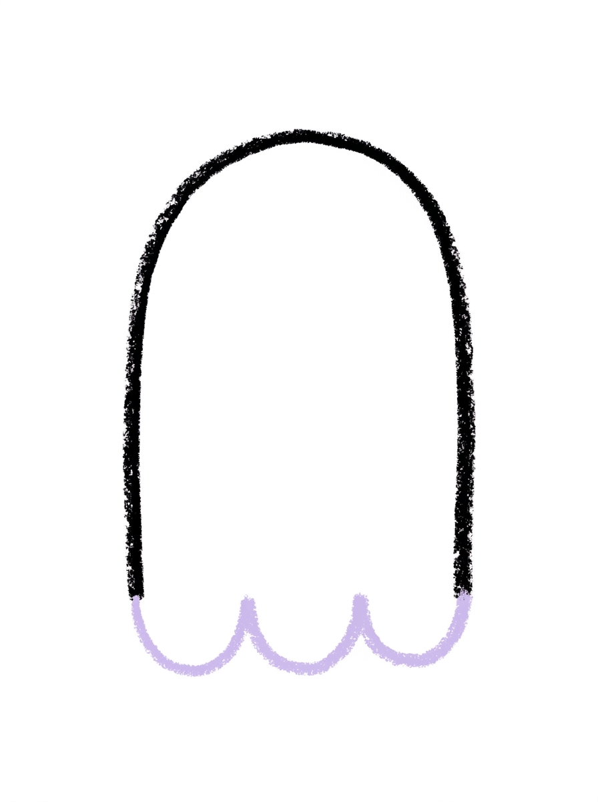
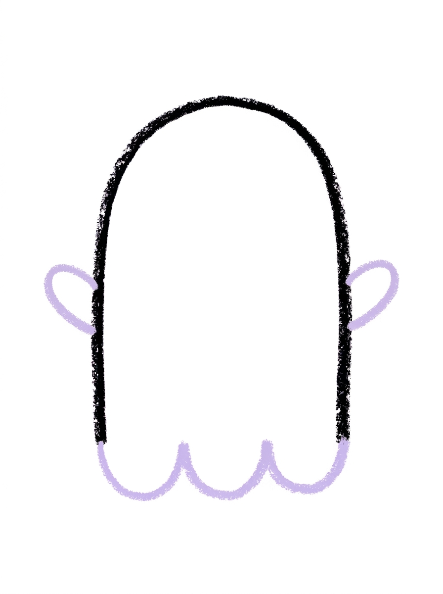
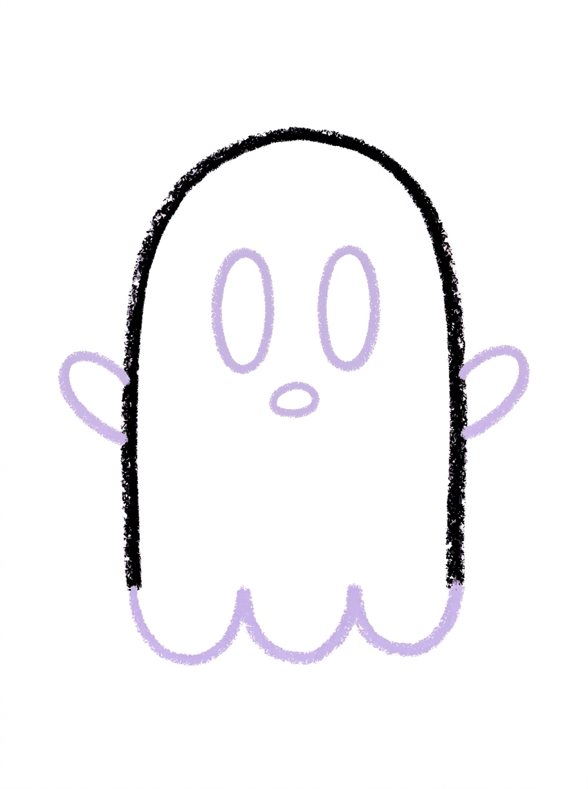
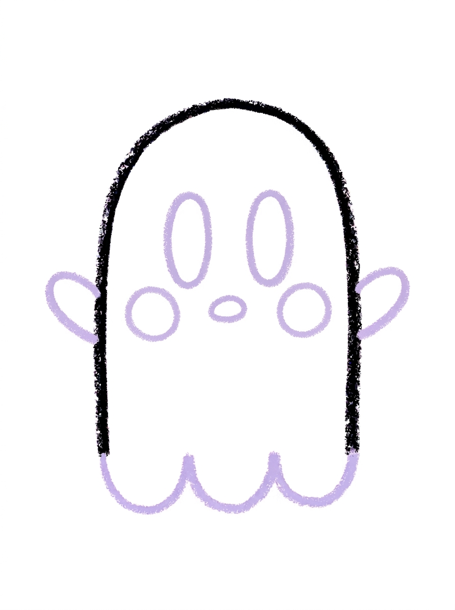

Ghost Drawing for Kids How to Draw A Ghost in 6 Easy Steps
Quick Answer
Draw one tall arch for the body and close the bottom with a wavy line of three bumps. Add a small arm on each side, two tall oval eyes and a small oval mouth, then two round cheeks, and colour the ghost white with pink cheeks. Made for ages 3 and up — no signup needed, just print and draw.
At a Glance
- Subject: How to draw a ghost
- Ages: 3+
- Steps: 6 steps
- Time: ~15 min
- Difficulty: Easy
- Supplies: Paper, crayons
This is the friendliest ghost on the page — a round-topped little character with rosy cheeks and a wavy bottom that looks like it is floating. Kids find it easy because the whole body is a single arch, and the wavy hem is just three bumps in a row.
✏️ Draw Your Ghost in 6 Easy Steps
One step per box — this step by step ghost drawing shows each new part in a different color so kids can see exactly what changed.
Step 1: The Body

Draw one tall arch shape in the middle of your paper — a round dome top with two straight sides going down. Leave the bottom open for now — no line across the bottom. This is your ghost's body.
Step 2: The Wavy Hem

Draw one wavy line across the open bottom of the body to close it up: three half-circle bumps in a row, connecting one side to the other. This wavy line is the ghost's bottom edge.
Step 3: The Arms

Draw one small rounded arm sticking out from each side of the body, each arm touching the side of the body.
Step 4: The Face

Draw two tall oval eyes side by side in the upper half of the body, and one small oval mouth below them.
Step 5: The Cheeks

Draw two medium circles inside the body, one below each eye. These are the ghost's cheeks.
Step 6: Color It In

Color your ghost! White for the body and arms with a little pale lavender shading along the edges and around the wavy hem, solid black for the eyes and mouth, and pink for the cheeks. Great drawing!
📊 Ghost Drawing by Age
Every age can join in — just adjust the job.
| Age | What they can do | Tip |
|---|---|---|
| 3-4 | Draw the tall arch body and the two big oval eyes — the biggest, simplest shapes. | Leaving the bottom open in Step 1 feels strange to little kids; show them the wavy hem is coming in Step 2 to close it. |
| 4-5 | Draw the wavy hem of three bumps and add both arms and the oval mouth. | Count the hem bumps together — three half-circles from one side to the other — before they start the line. |
| 6+ | Complete all six steps, including the cheek circles and the pale lavender shading. | Challenge them to draw a ghost family — one big ghost and two small ones — using the same steps at different sizes. |
🖨️ Download Your Free Ghost Drawing Printable
The printable lays out all 6 steps one per box, big enough for little hands — kids draw right alongside each step.
⬇️ Open Free Printable 🖨️ Print🎁 Free printable for ages 3+
👻 Peek-a-Boo Ghost Hunt
Draw the ghost several times on one big sheet — peeking from behind a drawn pumpkin, a tree and a moon — then colour them all and ask a sibling or parent to find and count every ghost. It turns the tutorial into a hide-and-seek picture, and drawing the same ghost again and again is exactly the repetition that makes the steps stick.
What You'll Need to Draw A Ghost
You need paper, a pencil and crayons or markers. For Step 6 keep white ready for the body and arms, pale lavender for the soft shading along the edges and around the wavy hem, black for the eyes and mouth, and pink for the cheeks. Black or dark purple paper with a white crayon makes a striking night version.
What They're Learning
This tutorial practices the arch — a round dome on two straight sides — plus the wavy line, made of three half-circle bumps in a row. Kids also practice tall ovals for the eyes, a small oval for the mouth and circles for the cheeks, and they learn to leave a shape open and close it with a different line, which is real planning in a drawing.
Make It Yours
Once the first ghost floats, try: a surprised ghost with a bigger round mouth, a ghost holding a tiny pumpkin or a trick-or-treat bag, three ghosts of different sizes as a family, or a night scene with the ghost glowing pale lavender against a black sky full of stars.
🛒 Our Favorite Drawing Supplies
These are the supplies we reach for in our own home — washable (because kids), quality paper, and enough colors to avoid fights.
As an Amazon Associate, MomYouNeedThis earns from qualifying purchases — at no extra cost to you.
💡 Ghost Drawing Tips for Parents
Step 2 is the clever part of this tutorial: the wavy line is not decoration inside the ghost — it IS the bottom edge. If your child draws it floating inside the body, the ghost will look like it is wearing a skirt; gently point out that the bumps connect one side of the arch to the other and close the shape.
White ghosts on white paper need the Step 6 shading to shine. The pale lavender along the edges and around the hem is what makes the ghost visible — or hand your child light gray or purple paper and a white crayon and let the paper do the work.
✏️ Ghost Drawing Step by Step
This ghost drawing starts with one open arch and closes it with a wavy line, then adds arms, face and cheeks in that order, with colour last. The body is finished by Step 2, so your child has a complete ghost shape very early and spends the rest of the steps decorating it.
Follow the printable one step at a time. The only step that asks for patience is Step 1 — leaving the bottom open feels unfinished, but it is what makes the wavy hem possible in Step 2.
The colour palette is tiny: white, pale lavender, black and pink. That makes this a good first tutorial for a child who gets overwhelmed by a whole crayon box.
See free ghost printable for more.
✏️ One Shape Per Step, Six Steps Total
The exact order: Step 1 is one tall arch — a round dome top with two straight sides, left open at the bottom. Step 2 closes it with one wavy line of three half-circle bumps, which becomes the ghost's bottom edge.
Step 3 adds one small rounded arm on each side. Step 4 is the face: two tall oval eyes and one small oval mouth. Step 5 adds two medium circles below the eyes for cheeks. Step 6 colours the ghost white with black eyes and mouth and pink cheeks.
Count the ovals as you go — two eyes, one mouth, two cheeks — and the pattern of the tutorial becomes a little matching game as well as a drawing lesson.
See free ghost printable for more.
👻 Cute Ghost Drawing
Not every child wants spooky at Halloween, and this cute ghost drawing is made for them: round, smiling company with pink cheeks, closer to a friendly bedsheet character than anything frightening. It works for classroom parties where 'cute not creepy' is the rule.
The cheeks do most of the cute work, along with the tall oval eyes. If your child wants the ghost friendlier still, a tiny smile can replace the oval mouth — the steps forgive swaps like that easily.
Cut out a finished ghost and tape it inside a window, and the pale lavender shading glows nicely against daylight — a homemade Halloween decoration drawn by your own child.
See free ghost printable for more.
❓ Ghost Drawing FAQs
What is the easiest way to draw a ghost?
Draw one tall arch, close the bottom with a wavy line of three bumps, then add two tall oval eyes and a small oval mouth. Arms and cheeks are extras — this tutorial walks through all of it in six steps.
What age is this ghost drawing for?
It is made for ages 3 and up. Younger children can draw the arch body and big eyes, while older kids add the wavy hem neatly, the cheeks and the lavender shading on their own.
What supplies do we need to draw a ghost?
Paper, a pencil and crayons or markers are all you need. For Step 6, have white, pale lavender, black and pink ready — or dark paper and a white crayon for a night version.
Is the ghost drawing printable really free?
Yes — every printable on MomYouNeedThis is 100% free to download and print. No signup, no payment, just tap the download button.
How do I print the ghost drawing tutorial?
Open the PDF and print at 100% scale, not 'fit to page', so the six step pictures stay their designed size. Your child can follow the steps in order beside their own paper.
Why is the ghost's bottom wavy?
The wavy hem — three half-circle bumps — makes the ghost look like it is floating instead of standing, and it suggests the bottom of a draped sheet. It is also the ghost's bottom edge, closing the open arch from Step 1.
Is this ghost too scary for preschoolers?
No — it is deliberately a cute ghost, with round shapes, a small oval mouth and pink cheeks. It is designed for little kids and classroom Halloween activities where friendly beats spooky.
My child's ghost is white and hard to see on white paper. What helps?
Use the pale lavender shading from Step 6 along the edges and around the wavy hem — that outline of soft colour is what defines the ghost. Drawing on gray, purple or black paper with a white crayon works even better.
📚 Keep Exploring
- ✏️ All 53 Drawing Tutorials 53 free step-by-step drawing tutorials for kids.
- 🎃 Halloween Coloring Free printable Halloween coloring pages for kids.
- ✏️ Drawing Practice Free printable drawing pre-writing worksheet for toddlers.